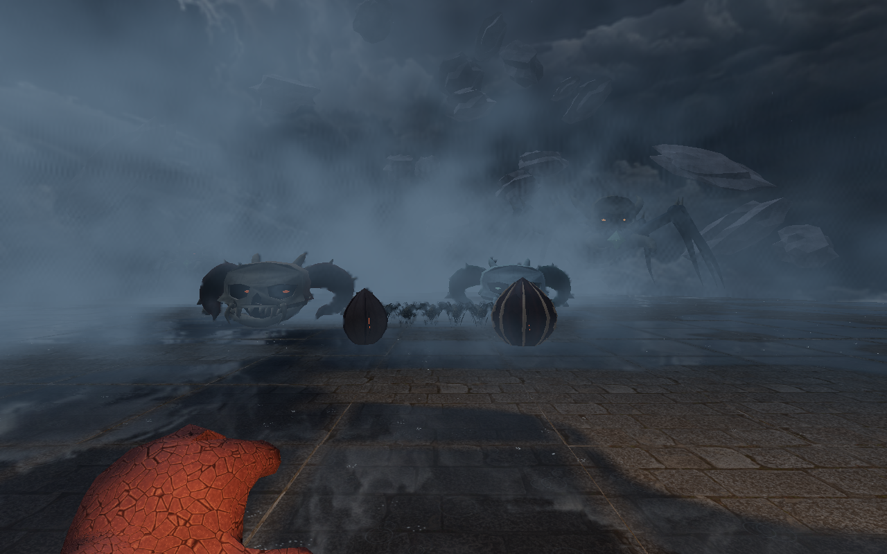
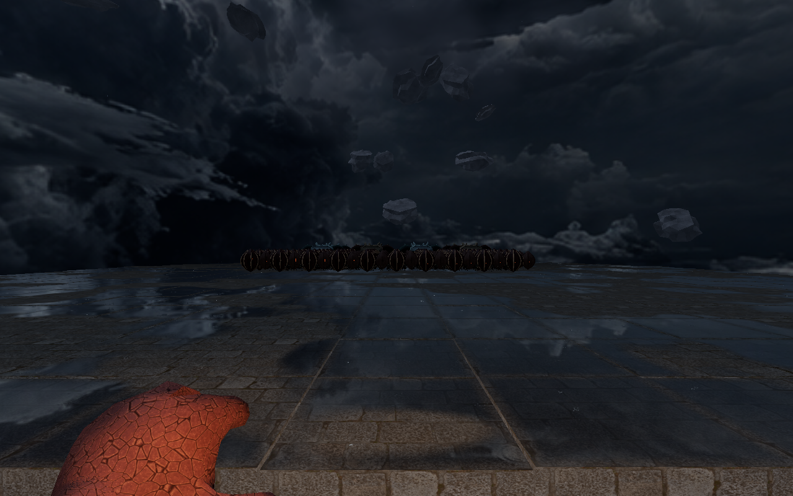

Skull IV and the brood
Newly authored bone, feeding faces and brood shells, using the retained Devil Daggers meshes as anatomical references. Ground pursuit, mouth targets, spider gait and egg hatching retain their current behavior.
The completed family
In motion
Controlled real simulation: grounded pursuit, feeding-head poses, moving spiderlings and both egg types hatching. Camera placement is authored for review.
Before / after
Models are individually fitted to the frame; this compares design rather than size. Click each image to inspect the full capture.
Skull IV
Transmuted IV
Brood Weaver
Armored Matriarch
Spiderling
Brood Sac I
Armored Brood Sac II
Retained original references
Neutral clay shading. Component placement is approximate: original skeletal transforms are unavailable. Spider references show body and feeding parts, without reconstructed legs.
Actual arena renderer

628-enemy stress scene

Functional checks and render counts · Implementation and verification notes